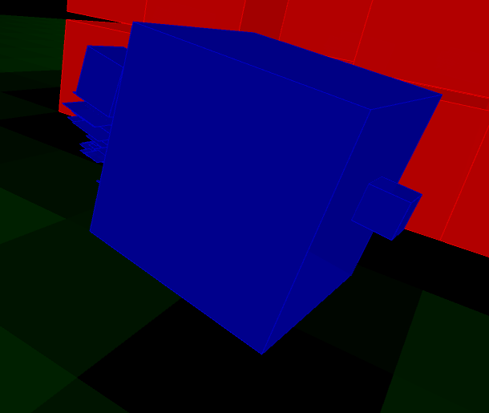
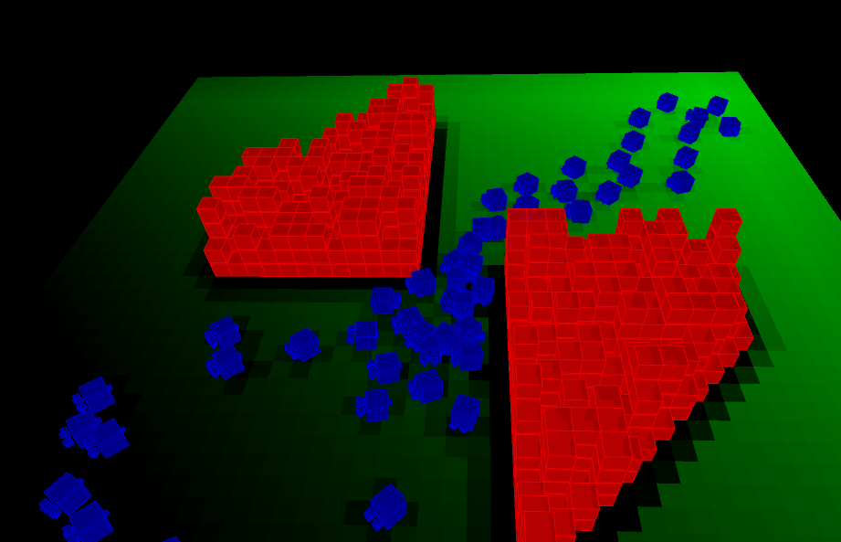

<div class="col s10 m10 l10">
	<!-- Teal page content  -->

	<div class="row">
		<div class="col s12 m9 l9">
			<div id="pf" class="section scrollspy">
				<h1 class="header light">Potential Field RTS Path Planning</h1>
					<h3 class="header light">Introduction</h3>
					<p class="light">
						We are a huge fan of Starcraft. The AI of Starcraft is very advanced. The path planning envolved is very interesting. So we decided to implement a variant of our own. We google online and found details about it. It used continuum crowd simulation and flocking crowd to achieve the final goal of the AI in Starcraft according to posts online (Not offically confirmed but highly likely due to the behavior of the game). We decided to work on continuum crowd. The paper that talks about this is highly abstract and they are more focused on crowd behavior instead of what we were thinking. We want to implement a pathing finding system for crowds that could eliminate a lot of problems and is suitable for RTS games. So instead of focusing on everything in the paper, we decided to focus on the dynamic potential field part of it and only implement a simple version to achieve path finding of multiply agents.
	        </p>
					<h3 class="header light">Agent</h3>
					<p class="light">
						Since we are simulating agents, we want our agents to look good. So first take a look of a screenshot of the agents.
						
						The agent is consisted of multiply boxes and a particle system to simulate the rocket jack on the back. The agent is a floating agent with rocket jack powering him. So when they float up and down base on sine function and looks very awesome. Below is a video of how it look when it is live.
						<center>
							<video width="400" controls>
			        	<source src="./agent.mov" type="video/mp4">
			    			Your browser does not support HTML5 video.
							</video>
						</center>
					</p>
				<h3 class="header light">Potential Field</h3>
				<p class="light">
					We devided our terrain into 50x50. So we have grid of size 2500. At each update, we recalculate the potential field base on the location of the agent. More green it is it represents that the potential there is higher. And the agenta are guided to higher potentials. The potential near the obstacles are calculated with a decay. So the further the grid is the lower the potential is. And the most important potential is calculated from the goal. There is a decay based on Manhantenn Distance between the gird and the goal for faster computer and it works really well too.
					
					And as always a video of a working simulation.
					<center>
						<video width="400" controls>
							<source src="./pf.mov" type="video/mp4">
							Your browser does not support HTML5 video.
						</video>
					</center>
					Note the jiggling around the small open space. If we replace the fancy rendered agents with simple floating circles it will look way better. But we decided to keep the agents since although they don't look very good they illustrates how idea. The result of abling to path through and go to the goal is well illustrated.
				</p>
				<h3 class="header light">Difficulties Faced</h3>
				<p class="light">
					Since the goal of such solution heads towards for a RTS game. The things we are able to find online often results in considering structers, enemy units and ranged units attack modes. Since we are only interested about how such thing works we had to cut a lot of things what we read. And also due to this, all the illustration we could found on this topic are polished game results. And the only few that are not are images. We used a lot of hacks to achieve some of the things. One example is the force given to the agent. Since it is grid based, we move to the grid next to us with highest potential. So we just apply a force the a agent that is pointing toward that grid. So as a result, from the video before, agents follow a eight direction moving pattern.
				</p>
				<h3 class="header light">Resources Used</h3>
				<p>
					Websites
					<li> <a href="http://aigamedev.com/open/tutorials/potential-fields/"> Potential fields in RTS </a></li>
					<li><a href="http://grail.cs.washington.edu/projects/crowd-flows/"> Crowd Flow </a></li>
					Tools
					<li><a href="http://processing.org"> Processing</a> </li>
					<li><a href="http://mrfeinberg.com/peasycam/"> PeasyCam (Processing Plugin)</a></li>
				</p>
			</div>

		</div>

		<div class="col hide-on-small-only m3 l3">
			<div class="toc-wrapper">
				<ul class="section table-of-contents">
					<li><a href="#pf">Potential Field RTS Path Planning</a></li>
				</ul>
			</div>
		</div>

	</div>
</div>
